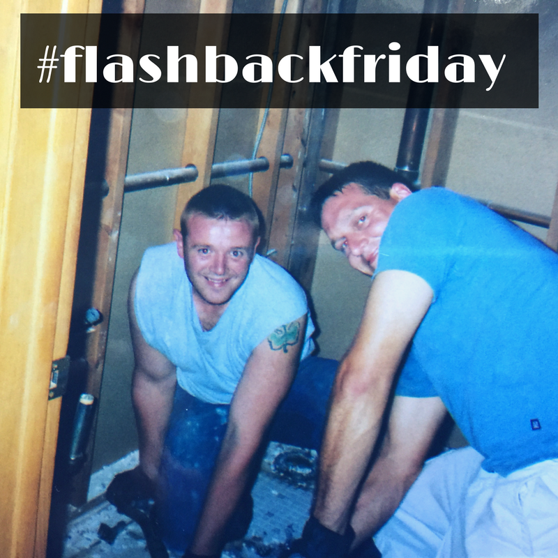
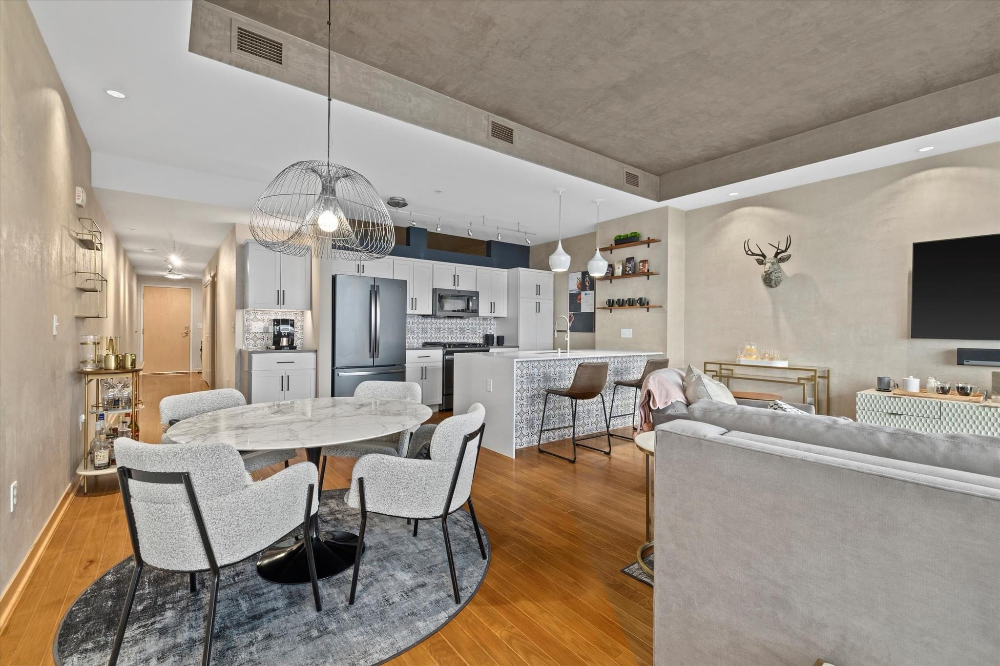
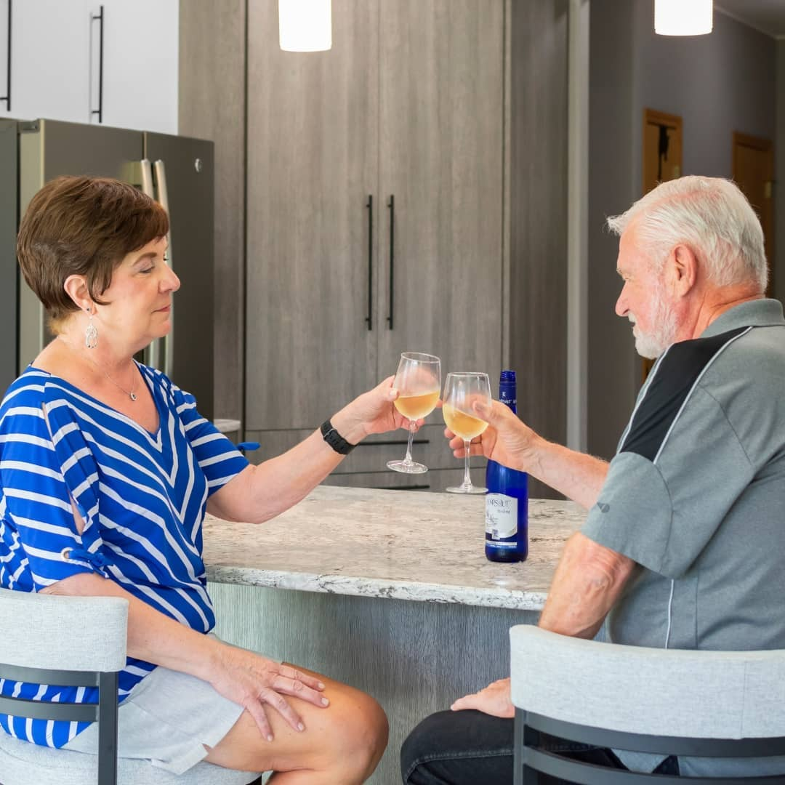
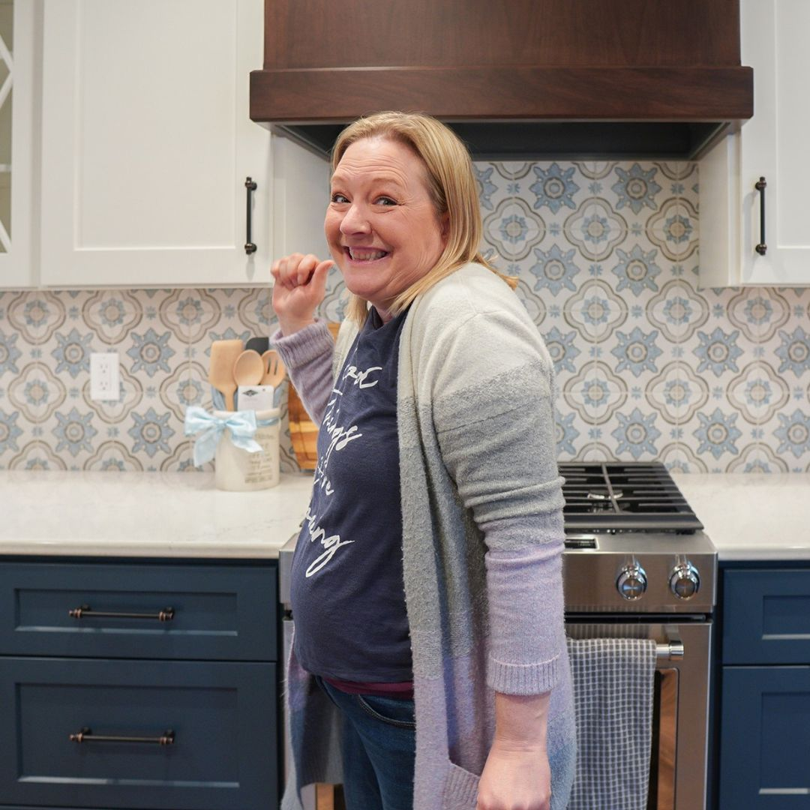

OUR STORY
Advantage Design + Remodel was founded in 2009 by
owners Greg Wade and Andy Schafer, who are also
brothers-in-law. Longtime general contractors in their
own right, Greg and Andy know the inner workings of
a home as well as what it takes to complete a major
kitchen, bathroom, addition, basement or even a
whole home renovation. They’ve built their own
homes and will provide you with the same care and
attention to detail when renovating yours.

Greg and Andy both share a common goal, to
provide superior home renovations to those in New
Berlin, Milwaukee, Whitefish Bay, Brookfield, Elm
Grove, Wauwatosa, and other nearby cities in
Wisconsin. Don’t struggle with a lack of space, bad
floor plan, poor layout, or an outdated design when
we can easily take care of those problems for you.
Contact us today to see why we are the preferred
general contractors for a number of area residents.
WHY REMODEL WITH US?

Your home is your largest, and most
important, investment, but it’s more
than that. It’s also your safe haven, the
place that you and your family feel the
most comfortable, secure, and happy.
Even so, there are some things that
you wish were different. Perhaps the
space isn’t quite as modern as you’d
like, or there isn’t as much room as
your family needs, or it simply doesn’t
function as well as you need it to. At
Advantage Design + Remodel, we
understand that choosing the best
remodeling contractor for your next
design project can be daunting. After
all, every contractor you encounter
claims they’re the best in the business
and that you should hire them. The
truth is, you have to be very careful to
choose the right contractor so you get
the best results.
TESTIMONIALS

Ed & Linda
Muskego, WI
“Everyone we met from the
company was very polite and
courteous as well as their
trade partners... We felt at
ease having Advantage
Remodel help us with our
project and trusting them
with our home.”

Nancy
Waukesha, WI
“The communication and
follow up was fantastic. I
always knew what was
scheduled and what to
expect during the whole
process. Also, the team on
the ground was very easy to
work with and friendly.
Highly recommend!”
EMPLOYMENT
Advantage Design + Remodel offers a plethora of
employment opportunities for carpenters in the
area. Our vision is to bring together skilled
individuals who possess a robust set of skills in
carpentry, from framing to installing doors and
windows. We are looking for candidates who not
only have the ability to interpret construction
drawings and handle various tools with precision
but also share our commitment to quality and
customer satisfaction. For those with experience, or
even those fresh from obtaining a high school
diploma or an associate degree, we provide a
dynamic work environment that fosters growth and
skill development. Our employees are our family,
and we invest in them by offering benefits such as
training in new techniques and the use of
innovative products from leading brands.
At Advantage Design + Remodel, we recognize the
value of our carpenters and offer competitive pay
rates and benefits, including vacation time.
Whether you are a seasoned lead carpenter, a finish
carpenter skilled in trim work, or someone
interested in maintenance roles, we have a place for
you. Our projects range from residential housing to
commercial contracts, providing a variety of job
types and levels to suit different skill levels and
career aspirations. Working with us means being
part of a respected construction company that
values your knowledge and experience. With a
focus on building lasting relationships with our
clients and within our team, we offer a fulfilling
opportunity for those seeking to excel in the trade.
Join us, and be part of a company that not only
builds structures but also builds careers and
communities.
OPEN POSITIONS